After completing this lesson, you’ll be able to:
In this lesson, you will:
Even if a workspace ran to completion without warnings or errors, it does not follow that the output matches expectations or requirements. For whatever reason, the workspace may be producing data incorrectly. We can determine this by inspecting the translation output.
To inspect your output, view it in Data Preview or the destination application.
You can inspect several aspects of data, including:
When encountering problems, you should inspect your data to see if its components are incorrect.
This stage is solely to determine if there are any problems.
A workspace record count refers to the numbers shown on each connection once a translation is complete:
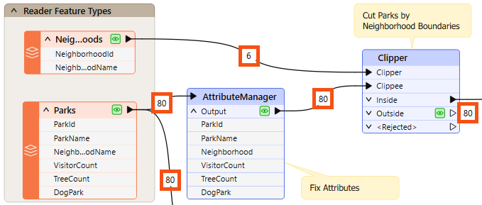
Once you find an error or problem, record counts help us identify where that problem occurred.
In the above screenshot, if the Clipper output is incorrect, you should inspect the prior record counts to see if any counts look wrong. Perhaps you know that there are seven neighborhoods, but the record count shows only six.
You can check several things when the number of output features is incorrect.
If you get zero output, and the record counts show that all features entered a transformer, but none emerged, then you can be reasonably confident that the transformer is the cause of the problem:
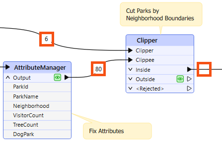
For example, 80 features enter the Clipper transformer (to be clipped against a single boundary), but none emerge. The Clipper transformer is almost certainly the cause of any incorrect output.
The transformer does not reject the data; it merely does not pass the test expected. It's possible that Clipper and Clippee don't occupy the same coordinate system; hence, one does not fall inside the other.
Turning on data caching helps to confirm this to be the case:
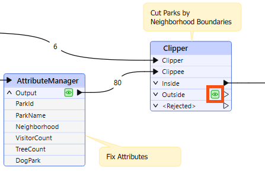
Alternatively – and this is a common cause of missing features – the author has connected the wrong output port! For example, this user connected the StatisticsCalculator Summary output port when they wanted the features from the Complete port:
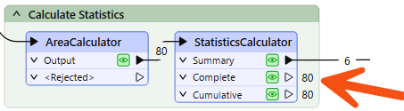
You can observe record counts and data caches to ensure you are getting the expected number of features and they look correct.
Sometimes, when features go missing, they are rejected by a transformer. Many transformers include a <Rejected> port to output these invalid features:
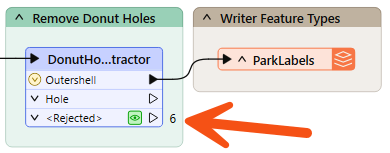
Remember, features are automatically counted and stored on a <Rejected> port, even if data caching is off.
As an additional benefit, the rejected features will often include a rejection code attribute explaining the problem:
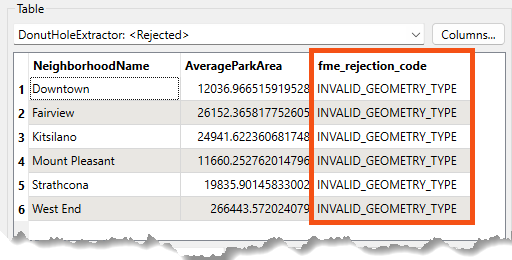
Simply reading a rejection code can often help you identify the problem. Please refer to the transformer documentation for more information if it does not.
If the record counts cannot help pinpoint a problem's location, the next step is inspecting data at crucial translation stages.
Generally, issues in an output dataset occur when:
Amar is having problems with a workspace that clips street trees to Vancouver neighborhood boundaries and sends it to Frank for help. Frank uses his debugging skills to track down two separate issues: a rejected feature that stops the translation, and a coordinate system mismatch that produces empty output.
In this exercise, you will:
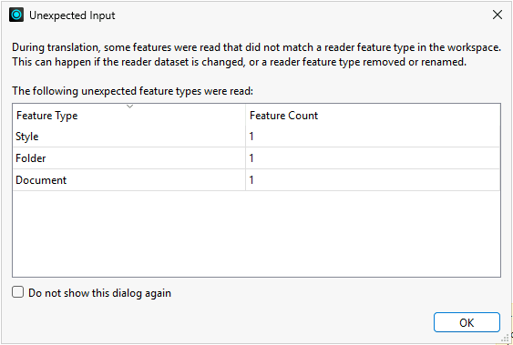
Use the Translation Log to find out why the workspace stops before completing due to an error.
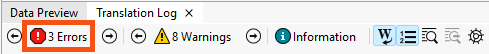
The below feature caused the translation to be terminatedJSONExtractor_<Rejected> (TeeFactory): JSONExtractor_<Rejected>: Termination Message: 'JSONExtractor output a <Rejected> feature. To continue translation when features are rejected, change 'Workspace Parameters' > Log and Troubleshoot > 'Rejected Feature Handling' to 'Continue Translation''
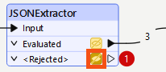
NO_RESULT.<null>. You'll need to find out why the JSONExtractor returned no result for this feature.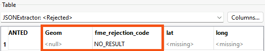
Now that you know which record was rejected, check the JSONExtractor transformer parameters to determine why.
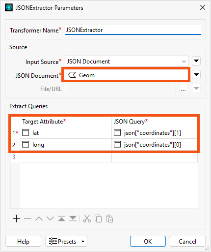
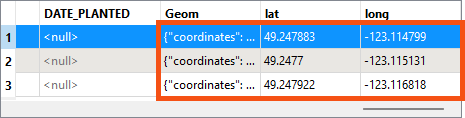
To fix this problem, filter out null Geom records before they reach the JSONExtractor.
GeomAttribute Has a Value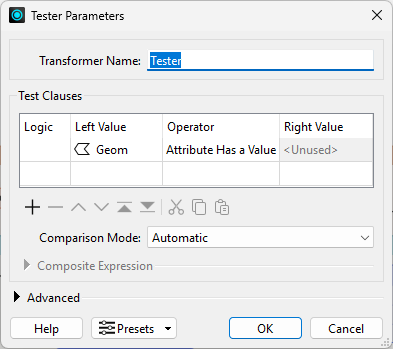
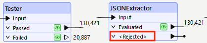
The workspace runs without errors, but you notice something looks off. Check the Clipper transformer's record counts to see if the results look as expected.
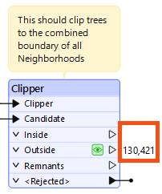
You’ve got the skills to troubleshoot this one. Before following the steps below, take a minute to see if you can confirm whether a coordinate system mismatch is causing the overlap issue.
Open both datasets in Data Preview at the same time. This makes them visible together in the Graphics View, so you can check whether they overlap.
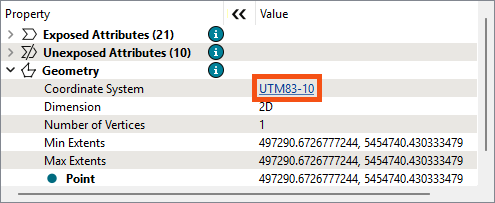
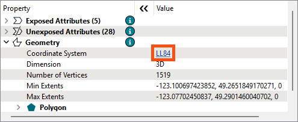
Both datasets need to be in the same coordinate system before the Clipper can detect overlap. It is better to conduct spatial analysis using a projected coordinate system, so reproject the Neighborhoods data to UTM83-10 to match the tree data. You can always reproject back to LL84 at the end if needed.
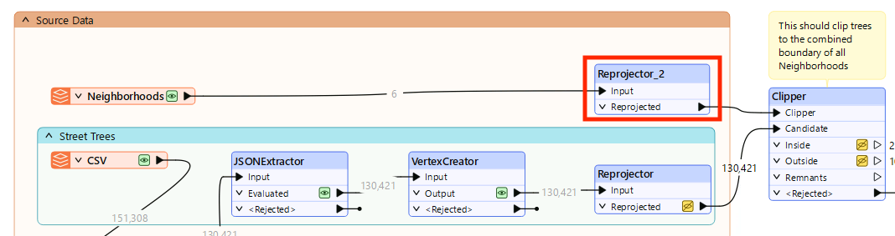
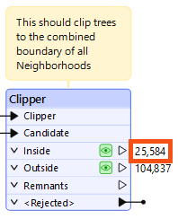
You fixed the coordinate system mismatch by duplicating the Reprojector to reproject the Neighborhoods data to UTM83-10. But there was another option: removing the Reprojector entirely so both datasets stay in LL84. Both approaches resolve the mismatch, but one is the better choice for spatial analysis. Consider why before looking at the answer.
In this challenge, you will:
Both approaches resolve the coordinate system mismatch and the clip will work either way. However, reprojecting both datasets to UTM83-10 is the better choice.
LL84 is a geographic coordinate system that measures distance in degrees, not meters. This introduces distortion when performing spatial analysis such as clipping, buffering, or area calculations. UTM83-10 is a projected coordinate system that measures in meters, making it more accurate for this type of analysis.
If the final output needs to be in LL84, add a Reprojector at the end of the workspace to reproject back before writing.